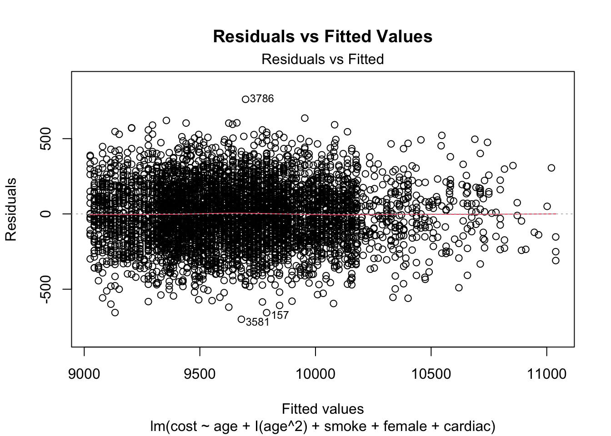
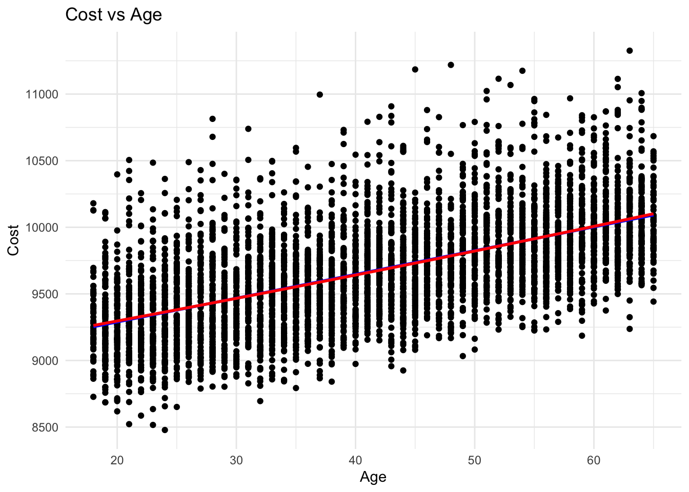

#Load data
cohort_data <- read.csv("cohort.csv")
# Load libraries
library(ggplot2)
library(dplyr)
library(readr)
library(tidyr)
library(car)Assignment 9: Simulated Data Report
Introduction
In this report, I analyze a simulated dataset to determine the underlying formulae that were used to generate the data. The dataset contains several variables, including age, cost, smoke, female, and cardiac. The goal of this analysis is to uncover the relationships between these variables and to identify the original equations that model the relationship between cost and the other predictors. The purpose of this assignment is to increase my familiarity with Quarto by creating a reproducible report.
To achieve this, I will conduct a series of regression analyses, beginning with a simple linear regression and then extending to multiple regression models that incorporate additional variables such as smoke, female, and cardiac. By examining the significance of these variables and the overall fit of the models, I aim to deduce the formulae that best explain the variation in cost.
Method
Since I am unsure of the structure of this dataset, I employ several exploratory methods. The steps involved in this analysis include:
Loading and exploring the dataset: Understanding the structure and summary statistics of the data.
Multiple regression analysis: Modeling the relationship between
costandage, including additional variables (smoke,female,cardiac) as covariates.Polynomial regression: Investigating potential non-linear relationships by including a quadratic term.
Model comparison: Using ANOVA to compare different models and determine the most appropriate one.
First, I will load the data and the necessary statistical packages.
Next I will explore the data using the head() and summary() commands to get a general sense of the data.
# Print the first few rows of the dataset
head(cohort_data) smoke female age cardiac cost
1 1 0 44 0 10566
2 0 1 46 0 9668
3 0 0 56 0 9889
4 0 0 35 0 9780
5 0 0 49 0 10200
6 0 0 64 0 10082# Get a summary of the data
summary(cohort_data) smoke female age cardiac
Min. :0.0000 Min. :0.000 Min. :18.00 Min. :0.000
1st Qu.:0.0000 1st Qu.:0.000 1st Qu.:30.00 1st Qu.:0.000
Median :0.0000 Median :0.000 Median :41.00 Median :0.000
Mean :0.1016 Mean :0.487 Mean :41.47 Mean :0.038
3rd Qu.:0.0000 3rd Qu.:1.000 3rd Qu.:53.00 3rd Qu.:0.000
Max. :1.0000 Max. :1.000 Max. :65.00 Max. :1.000
cost
Min. : 8478
1st Qu.: 9389
Median : 9664
Mean : 9672
3rd Qu.: 9925
Max. :11326 To determine the original equations that generated the simulated data, I perform a linear regression. Then to explore potential non-linear relationships, I fit a polynomial regression model. I conduct an ANOVA to see whether there is a significant difference between these two models–if so, this would suggest that the polynomial regression is capturing variance that the linear regression is not.
# Perform a linear regression analysis
simple_regression <- lm(cost ~ age + smoke + female + cardiac, data = cohort_data)
# Display the summary of the model
summary(simple_regression)
Call:
lm(formula = cost ~ age + smoke + female + cardiac, data = cohort_data)
Residuals:
Min 1Q Median 3Q Max
-700.87 -137.95 -0.95 136.99 759.92
Coefficients:
Estimate Std. Error t value Pr(>|t|)
(Intercept) 8988.7981 9.5392 942.30 <2e-16 ***
age 18.2124 0.2081 87.50 <2e-16 ***
smoke 592.7583 9.5149 62.30 <2e-16 ***
female -293.6548 5.7041 -51.48 <2e-16 ***
cardiac 289.2236 15.2189 19.00 <2e-16 ***
---
Signif. codes: 0 '***' 0.001 '**' 0.01 '*' 0.05 '.' 0.1 ' ' 1
Residual standard error: 199.2 on 4995 degrees of freedom
Multiple R-squared: 0.7555, Adjusted R-squared: 0.7553
F-statistic: 3859 on 4 and 4995 DF, p-value: < 2.2e-16# Check for potential non-linear relationships and interactions
square_regression <- lm(cost ~ age + I(age^2) + smoke + female + cardiac, data = cohort_data)
summary(square_regression)
Call:
lm(formula = cost ~ age + I(age^2) + smoke + female + cardiac,
data = cohort_data)
Residuals:
Min 1Q Median 3Q Max
-699.57 -138.29 -0.95 137.32 761.27
Coefficients:
Estimate Std. Error t value Pr(>|t|)
(Intercept) 9000.66011 28.02746 321.14 <2e-16 ***
age 17.57416 1.43316 12.26 <2e-16 ***
I(age^2) 0.00768 0.01706 0.45 0.653
smoke 592.70032 9.51654 62.28 <2e-16 ***
female -293.66143 5.70454 -51.48 <2e-16 ***
cardiac 289.18548 15.22031 19.00 <2e-16 ***
---
Signif. codes: 0 '***' 0.001 '**' 0.01 '*' 0.05 '.' 0.1 ' ' 1
Residual standard error: 199.2 on 4994 degrees of freedom
Multiple R-squared: 0.7555, Adjusted R-squared: 0.7553
F-statistic: 3087 on 5 and 4994 DF, p-value: < 2.2e-16# Compare models using ANOVA
anova(simple_regression, square_regression)Analysis of Variance Table
Model 1: cost ~ age + smoke + female + cardiac
Model 2: cost ~ age + I(age^2) + smoke + female + cardiac
Res.Df RSS Df Sum of Sq F Pr(>F)
1 4995 198116426
2 4994 198108390 1 8036.7 0.2026 0.6527The Residuals vs. Fitted Values plot will be useful for diagnosing potential problems with the regression model such as non-linearity, unequal error variances, and outliers.
# Plot Residuals vs. Fitted Values
plot(square_regression, which = 1, main = "Residuals vs Fitted Values")
Based on the results of the regressions, I will now visualize the data and fit the linear regression line.
# Plot the original data with fitted lines
ggplot(cohort_data, aes(x = age, y = cost)) +
geom_point() +
geom_smooth(method = "lm", formula = y ~ x, se = FALSE, color = "blue") +
geom_smooth(method = "lm", formula = y ~ poly(x, 2), se = FALSE, color = "red") +
theme_minimal() +
labs(title = "Cost vs Age", x = "Age", y = "Cost")
Significance of Variables:
All variables (
age,smoke,female,cardiac) in both models have a p-value that is significantly less than .05, suggesting that there is a relationship between all variables andcost.The quadratic term
I(age^2)in the polynomial model is not significant (p-value = 0.653), indicating that adding a quadratic term for age does not significantly improve the model.
Model Fit:
Both models have the same \(R^2\) and adjusted \(R^2\) values (0.7555 and 0.7553, respectively), indicating that they explain approximately 75.55% of the variance in the
cost.Residual standard error is the same for both models (199.2), suggesting similar accuracy.
ANOVA Comparison:
- The ANOVA comparison shows that the F-statistic for the additional quadratic term is 0.2026 with a p-value of 0.6527, which is not significant. This provides further evidence that the quadratic term does not provide a significant improvement over the simple linear model.
Conclusion:
The simple linear regression model (
cost ~ age + smoke + female + cardiac) is sufficient for explaining the variance incost. Adding a quadratic term for age does not significantly improve the model.The significant coefficients for
smoke,female, andcardiacsuggest that these factors have a notable impact on the cost.The model indicates that, on average, costs increase with age and smoking, while being female is associated with lower costs. Cardiac conditions are associated with higher costs.